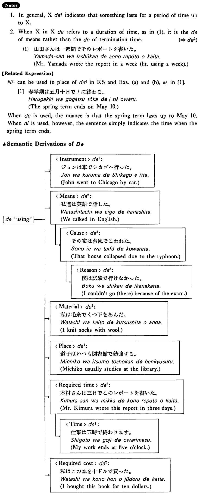

で (4) (B. 109)
- (ks).
- 春学期は五月十日で終わる・終わります。
- The spring term ends on May 10.
- (a).
- このコンサートは十時で終わります。
- This concert will be over at ten o'clock.
- (b).
- 私のパスポートは六月で切れる。
- My passport expires in June.
- (c).
- アメリカに来てから今日で三年になる。
- It's been three years since I came to America.
